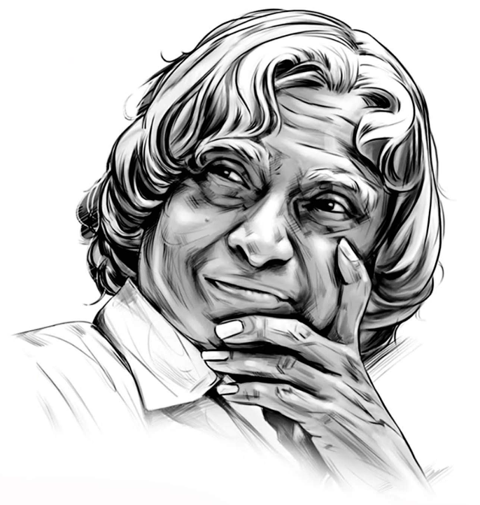

1931-2015
“If you want to shine like a sun, first burn like a sun”
Dr. APJ Abdul Kalam, fondly known as the "Missile Man of India, " was a visionary and an inspiring leader who left an indelible mark on the world. With his unwavering dedication and passion for science and technology, he played a pivotal role in shaping India's aerospace and defense capabilities. Beyond his exceptional achievements as a scientist, Dr. Kalam was a great human being who touched countless lives with his humility, kindness, and wisdom. He believed in the power of education and encouraged the youth to dream big and work relentlessly to achieve their goals. His speeches, filled with hope and optimism, resonated with people of all ages and backgrounds, inspiring them to believe in themselves and their potential. Dr. APJ Abdul Kalam's legacy as a true leader and a role model continues to shine brightly, reminding us that with perseverance and a strong sense of purpose, we can overcome any challenge and make the world a better place.